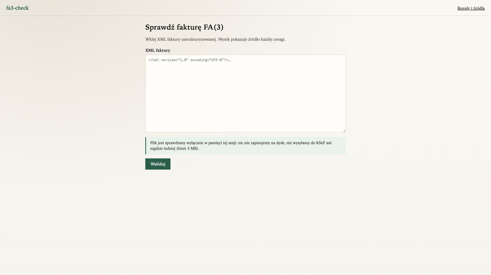
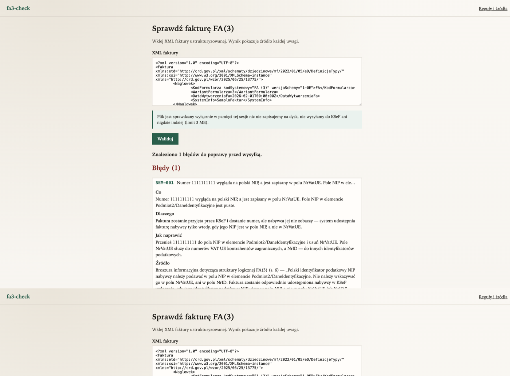
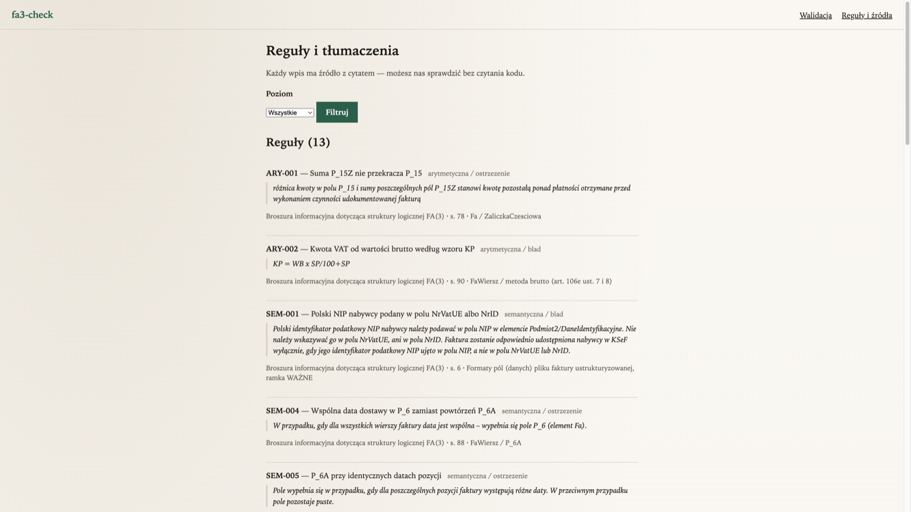

FA(3) validator with auditable sources
Paste a structured invoice XML. Get findings with a quote from the official MF brochure — not a raw parser message.
GitHub Pages is static. The live validator (FastAPI) runs on your machine:
python -m fa3check.web → http://127.0.0.1:8000.
Below are screenshots from that UI.



Run locally
git clone https://github.com/Iakirmon/ksef-fa3-checker.git
cd ksef-fa3-checker
python3.12 -m venv .venv && .venv/bin/pip install -e ".[dev]"
.venv/bin/python -m fa3check.web
Sample invoices: korpus/zloty/fa3-przyklad-01.xml … -26.xml.
Full story: README
(English + Polish).
Po polsku
Walidator faktury FA(3) / KSeF. Wklejasz XML, dostajesz zastrzeżenia z cytatem ze źródła MF.
Ta strona na GitHub Pages jest tylko podglądem (screenshoty).
Działający walidator odpalasz lokalnie — nic nie wychodzi na zewnątrz.